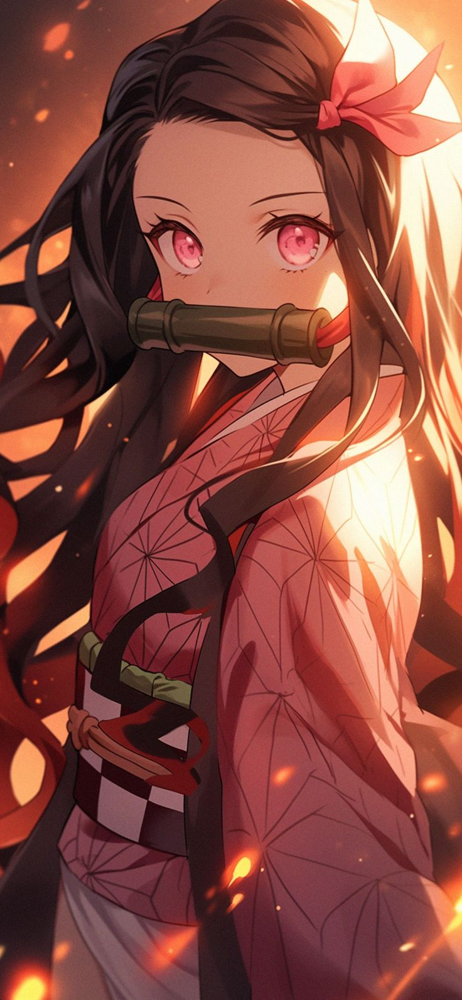
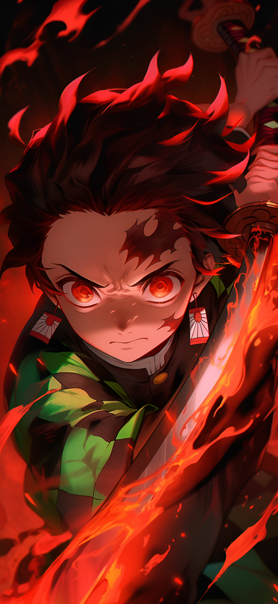
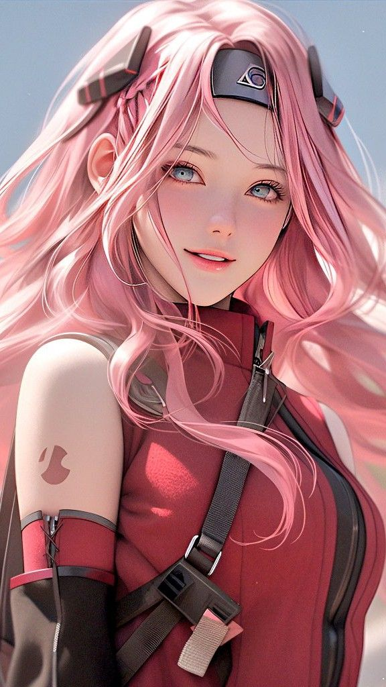

Nezuko
Nezuko Kamado (Japanese: 竈門 禰豆子, Hepburn: Kamado Nezuko) is a fictional character in Koyoharu Gotouge's manga series Demon Slayer: Kimetsu no Yaiba. Nezuko and her older brother Tanjiro Kamado are the sole survivors of an incident through which they lost their entire family due to the Demon King, Muzan Kibutsuji, with Nezuko being transformed into a demon, but unexpectedly still showing signs of human emotion and thought.
Tanjiro
Tanjiro Kamado (Japanese: 竈門 炭治郎, Hepburn: Kamado Tanjirō) is a fictional character and the protagonist of Koyoharu Gotouge's manga Demon Slayer: Kimetsu no Yaiba. Tanjiro goes on a quest to restore the humanity of his sister, Nezuko, who was turned into a demon after his family was killed by Muzan Kibutsuji following an attack that resulted in the death of his other relatives. After an encounter with Giyu Tomioka, a demon slayer, Tanjiro is recruited by Giyu to also become a demon slayer to help his sister turn human again and avenge his family.
Naruto

Naruto[a] is a Japanese manga series written and illustrated by Masashi Kishimoto. It tells the story of Naruto Uzumaki, a young ninja who seeks recognition from his peers and dreams of becoming the Hokage, the leader of his village. The story is told in two parts: the first is set in Naruto's pre-teen years (volumes 1 to 27), and the second in his teens (volumes 28 to 72). The series is based on two one-shot manga by Kishimoto: Karakuri (1995), which earned Kishimoto an honorable mention in Shueisha's monthly Hop Step Award the following year, and Naruto (1997).
Sakura
Sakura is depicted as an innocent girl who does not share the same tragic backstories as her teammates but was regardless bullied throughout her youth. She initially has an infatuation for Sasuke, him at every juncture, and initially is not ambitious, besides becoming Sasuke's girlfriend in the future; by contrast, she is dismissive to her less-skilled teammate Naruto Uzumaki despite, ironically, being Naruto's initial love interest and disgust him. Over the course of the series, as Sasuke eventually leaves the village, Sakura begins to shed this singularly driven persona, becoming a medical ninja while apprenticed under the Fifth Hokage, Tsunade, and becomes friendly and even protective of Naruto as his life becomes increasingly at risk.
Goku

Son Goku is a fictional character and the main protagonist of the Dragon Ball manga series created by Akira Toriyama. He is based on Sun Wukong (known as Son Goku in Japan and Monkey King in the West), a main character of the classic 16th-century Chinese novel Journey to the West, combined with influences from the Hong Kong action cinema of Jackie Chan and Bruce Lee. Goku made his debut in the first Dragon Ball chapter, Bulma and Son Goku, originally published in Japan's Weekly Shōnen Jump magazine on December 3, 1984. Goku is introduced as an eccentric, monkey-tailed boy who practices martial arts and possesses superhuman strength. He meets Bulma and joins her on a journey to find the seven wish-granting Dragon Balls. Along the way, he finds new friends who follow him on his journey to become stronger. As Goku grows up, he becomes the Earth's mightiest warrior and battles a wide variety of villains with the help of his friends and family, while also gaining new allies in the process.
Elizabeth Liones

Elizabeth Liones is the third adoptive princess and current queen of the Kingdom of Liones, the 107th and current incarnation of the Goddess Elizabeth, the lover of Meliodas, and internim captain of the Seven Deadly Sins. She is the deuteragonist of the series. Originally an alleged survivor of Danafor's destruction, Elizabeth was adopted and raised by the king Bartra Liones. After the Holy Knights rebel, she sets on journey to find Seven Deadly Sins, becoming a waitress for Meliodas' tavern Boar Hat.[5] She later awakened as a Goddess and become the Seven Deadly Sins' prominent ally, participating in their battles against the Ten Commandments and later the Demon Clan in the New Holy War. Elizabeth is a beautiful young woman with a slender yet curvaceous physique, a big bust and regular height. She has very pale skin, large light blue eyes which can turn orange while gaining a triskele (though initially it only was her right eye), and long silver hair reaching her waist. Her bangs firstly covered her right eye but later stopped, later ending with a similar hairstyle to her original incarnation after being sliced across the forehead by one of Chandler's Split Tama. Elizabeth wanted poster's image is very accurate, since she had been in the kingdom very recently.